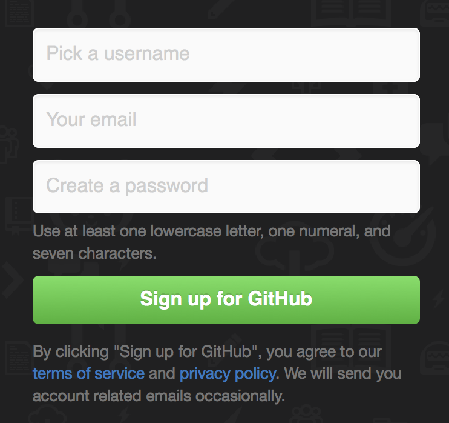
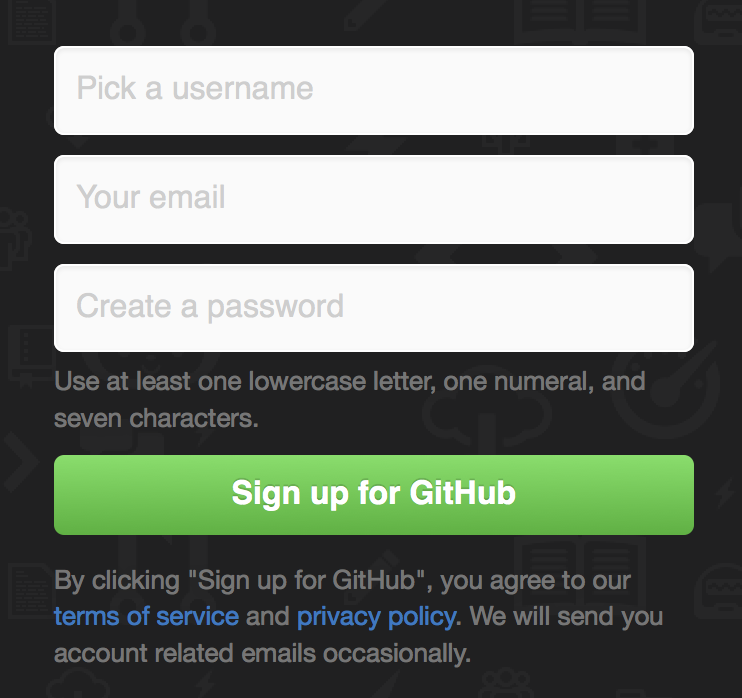
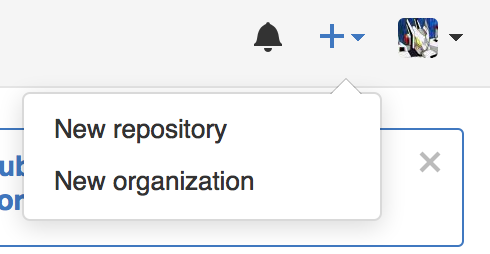
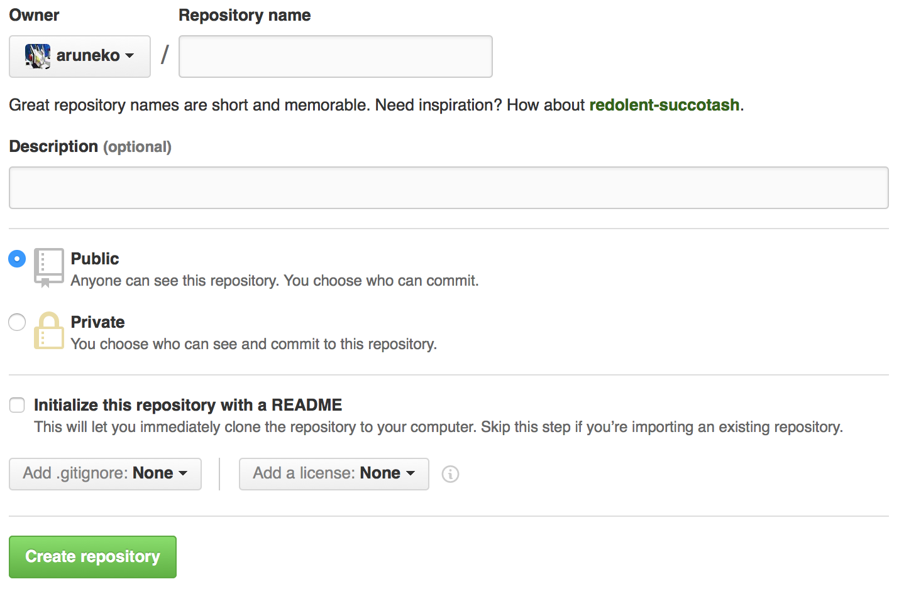
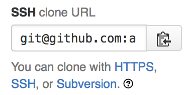
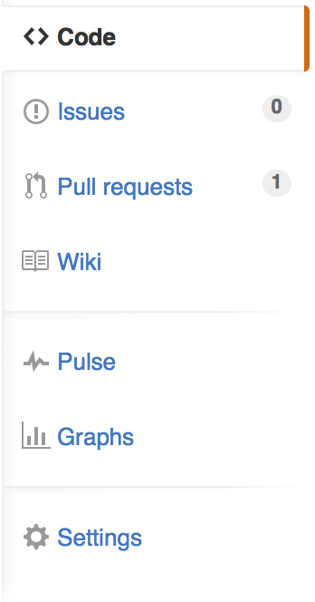

ユーザー登録
トップページ右側の登録フォームにユーザー名、メールアドレス、パスワードを入力して新規登録する。

トップページ右側の登録フォームにユーザー名、メールアドレス、パスワードを入力して新規登録する。

右上の「+」ボタンをクリックし「New Repository」を選択。

後は必要事項を記入して「Create repository」ボタンを押せば完了。面倒なときはリポジトリ名のみの記述でもOK。できればライセンスを選んでおくとよい。

適宜コマンドで行ふ。右下にクローンすべきURIが表示されるので、これを用ゐる。このURIをコピーし、以下のコマンドでクローンを作成する。

git clone [address]
ページ右側のメニューでは様々なことが行へる。

ssuesでは、これからやるべきことやバグなどについて書きためておき、後のコミットのためのメモを残すことができる。このIssueはコミットと関連づけることができ、どのコミットでその問題が解決されたかと行ったようなことが一目でわかるやうになってゐる。issueの発行は実に簡単であるから、ここでの解説は簡単に行ふ。メニューのそれをクリックし、右上にある「New issue」をクリックして内容を記述し、投稿すればよい。誰にでもできるので何か気になる動作を見つけたときはここから報告するのもありだらう。
Pull Requestsは、他のユーザーからの変更を受け入れるものである。Githubの公開リポジトリは全世界に向けて公開されてゐるので、何かバグを見つけたりした場合や便利な新機能を勝手に実装した場合、その変更点を取り入れてもらへるやう要求を行ふ。これをPull Requsetといふ。これも誰にでもできるので、積極的に送信するとよいかもしれない。
WikiはMarkdown形式で書くことができる。リポジトリにおいてあるソフトウェアについてのマニュアルなどを整備するとよいだらう。Markdown形式は実に簡単なものであるから、Wikiを書くストレスが少ない。
PulseやGraphsはコミットに対する統計を見ることができる。大規模なものだとその統計が見ることができて面白いかもしれない。
Settingsはそのリポジトリに対する細かい設定を行ふことができる。コミット可能なユーザーを追加したり、リポジトリの説明文を充実させたり、またリポジトリ自体の削除もここから行へる。
GithubにはGitを複数人で使いやすくするためのツールがそろってゐる。これらをうまく活用することで日々の開発作業も幾分かは楽になるだらう。一方でGithubに依存しすぎると、サーバーがダウンしている間業務が行へなくなるなどの支障が発生する。GitlabなどのGithubクローンを社内においておくのもよいかもしれない。Githubが落ちた可能性がある場合はTwitterを確認すると、他の人からの情報が得やすいのでおすすめしておく。